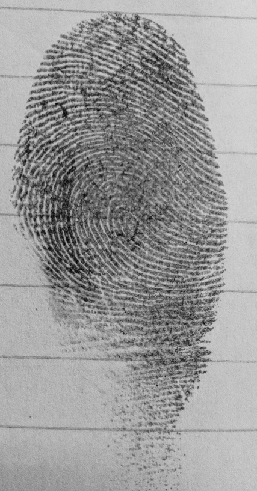
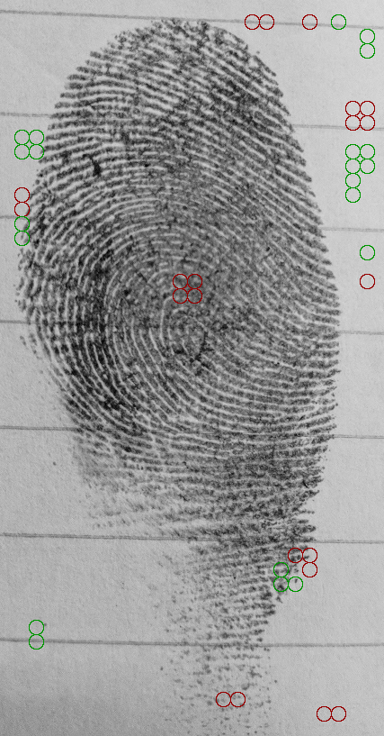
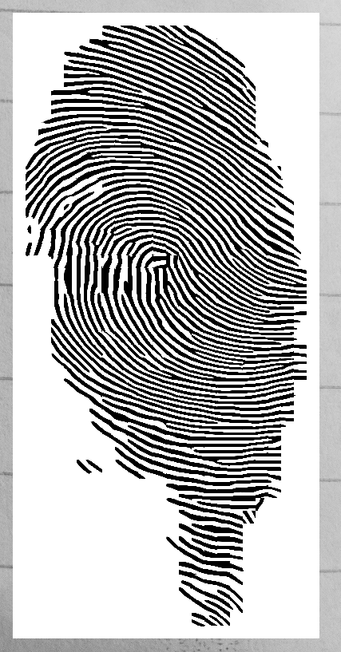
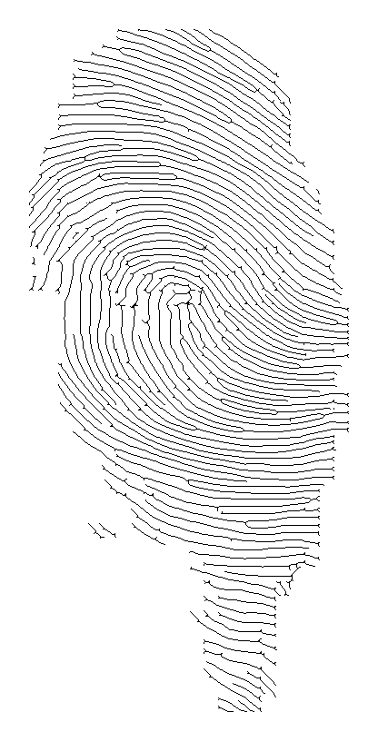
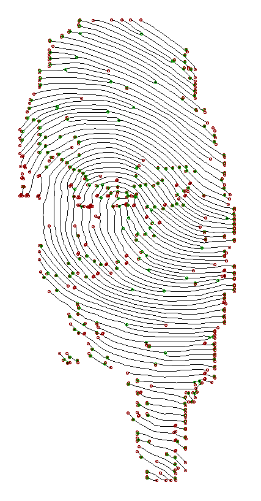

Nama : Dimas Fajar Saputro
NIM : L200160090
Requirement:
1. Python 2.7How to:
1. Menyiapkan gambar original berformat png
python poincare.py images/z.png 16 1 --smooth

python gabor.py images/z.png 16 --save

python thining.py images/z_enhanced.gif --save

python crossing_number.py images/z_enhanced_thinned.gif --save
